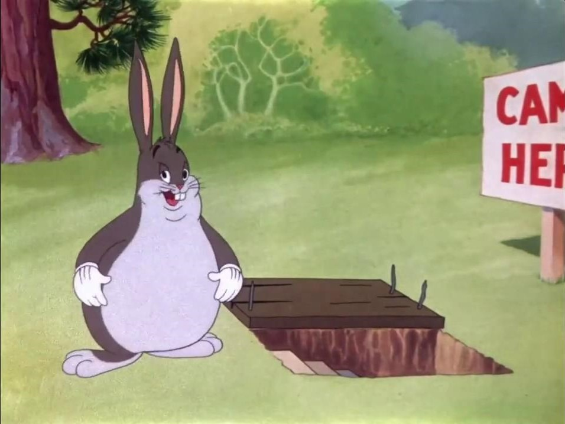
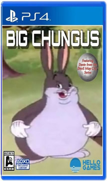
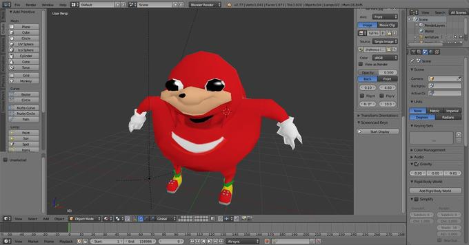
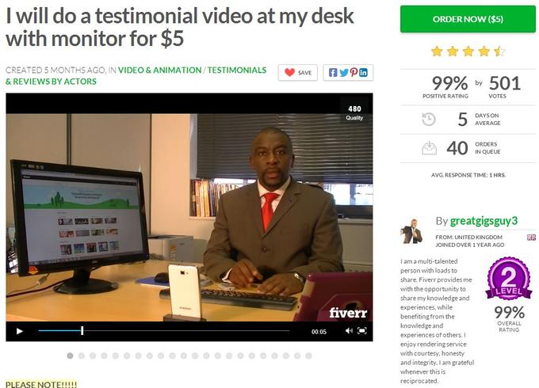

De bedoeling van de Meme Compendium is om een aantal memes te delen. Je kan hiet informatie vinden over een paar memes, waaronder:
Big Chungus verwijst naar een afbeelding van het stripfiguur Bugs Bunny, meestal met de uitdrukking "Big Chungus" en gepresenteerd als een game voor de PlayStation 4-console. Het woord "chungus" werd bedacht door videogame-journalist Jim Sterling enkele jaren voordat de meme populair werd. Vanaf juli 2019 herwon de meme de ironische populariteit op iFunny en bepaalde delen van Reddit, vooral als onderdeel van Reddit Moment-memes.
Fat Bugs Bunny Het beeld van Bugs Bunny verschijnt in Merrie Melodies-cartoon Wabbit Twouble, voor het eerst vertoond op 20 december 1941. Kortom, Bugs bespot Elmer Fudd, die in deze cartoon veel meer draaglijk is gemaakt dan zijn vorige en meer iconische ontwerp. Op 27 mei 2017 plaatste een anonieme 4chan-gebruiker de afbeelding van zwaarlijvige Bugs Bunny op / lit / board. De volgende verschijning van de afbeelding op 4chan kan worden gevolgd tot 19 juli 2017, met meer berichten met de afbeelding later dat jaar op / verlicht / en andere borden. Ik zou moeten beginnen met te zeggen dat ik niet echt de achtergrond in de filosofie heb om diep in te gaan op de historische ideeën achter Land en accelerationisme en dat het essay in OF mijn eerste lezing van Land is. Een van deze eerste dingen die me opvielen in de eerste paar paragrafen was de overeenkomst tussen zijn idee dat er een steeds zelfbewuster, minimaal intelligent parasiet gedijt in de schaduw en Colin Wilsons roman "The Mind Parasites". In het boek van Wilson ontdekt de hoofdpersoon dat sinds het begin van de beschaving een parasitair 'organisme' in aantal is gegroeid en tegelijkertijd het diepe onderbewustzijn van de menselijke geest heeft besmet. Het doel van de parasieten was om de menselijke inspanningen te sturen om steeds meer overmaat en verdorvenheid te raspen om de onvermijdelijke nasleep van ellende te voeden. Het is een geweldig boek en Wilson heeft het idee geweldig ontwikkeld, maar ik weet niet zeker of ik het fantastische idee kan accepteren dat het kapitalisme zelfbewust is geworden. Ik heb het gevoel dat Land literairer en metaforischer is dan wat dan ook. Op 21 juli 2017 heeft Redditor hollerbravo een screencap van 4chan-thread met de afbeelding geüpload naar / r / 4Chan subreddit. Op 27 juli 2017 werd een onderschriftafbeelding van zwaarlijvige Bugs Bunny gepost door de Eclectic Memes Facebook-groep. Het bericht is sindsdien verwijderd, met kopieën geschrapt door Me.me en Onsizzle.
Ugandan Knuckles is de bijnaam die wordt gegeven aan een afbeelding van het personage Knuckles uit de Sonic-franchise gemaakt door YouTuber Gregzilla, dat vaak wordt gebruikt als avatar door spelers in het multiplayer-spel VRChat die zinnen herhalen als "ken jij de weg" en bijbehorende memes met het land Oeganda, met name de film Who Killed Captain Alex? en Zulul. Het personage wordt geassocieerd met de uitdrukking 'ken jij de weg', die typisch wordt uitgesproken met een nep-Afrikaans accent en fonetisch wordt gespeld als 'ken jij de wey'. Naast de vraag in de hand zal een VR-gebruiker beginnen met het maken van "spugen" -geluiden, gevolgd door een "mob-achtige" mentaliteit. Nietsvermoedende VRchat-gebruikers worden het slachtoffer van de 'belofte' van Ugandan Knuckles om 'de wey' te laten zien. Alleen gevolgd door een massale sleepvaart.
Op 7 augustus 2016 uploadde YouTuber VirtuallyVain beelden van zichzelf waarin hij een Afrikaanse drugsbaron speelde in het spel Call of Duty: Black Ops, met regels als "Volg mij, ik ken de weg". Binnen twee jaar verzamelde de video 10,5 miljoen views en 17.900 reacties. Op 20 februari 2017 uploadde YouTuber Gregzilla een recensie van de platformgame Sonic Lost World uit 2013, met een parodie-animatie van het personage Knuckles (hieronder weergegeven, links). De video leidde vervolgens tot de Knuckles Sings remix-serie. Fans van de Twitch-streamer Forsen verwijzen vaak naar verschillende grappen met betrekking tot Oegandese krijgers tijdens het spelen van het spel PlayerUnknown's Battlegrounds. Bovendien is het bekend dat kijkers zijn kanaal streamen terwijl ze verschillende aan Oeganda gerelateerde memes schreeuwen. Op 15 september bracht DeviantArtist tidiestflyer een 3D-model uit op basis van Gregzilla's Knuckles-afbeelding. Op 22 december uploadde YouTuber Stahlsby een video met de titel "You Do Not Know the Way", waarin een zwerm VRChat-spelers die Oegandese Knuckles-avatars dragen, andere spelers trollen door klikgeluiden te maken en te zeggen "Je kent de weg niet". De regel "u kent de weg niet" wordt verondersteld te zijn geïnspireerd door een regel in Who Killed Captain Alex? waarin een personage zegt: "Hij weet hoe hij een pistool moet gebruiken".
Big Man Tyrone is een bijnaam die wordt gegeven aan ondernemer Gordon Hurd, die veel bekendheid verwierf met het maken van getuigenisvideo's op de online marktplaats Fiverr, die vaak wordt ingezet om grappige anime-gerelateerde video's te maken door gebruikers in de / a / (anime) en / s4s / boards op 4chan.
In april 2013 creëerde de in Australië gevestigde Fiverr-gebruiker Roger Stockburger een pagina waarin reclame werd gemaakt voor zijn $ 5 testimonial-videoservice, waarin klanten een script van 30 seconden kunnen sturen om te lezen voor hun keuze uit zeven verschillende achtergrondafbeeldingen. In september heeft de in het Verenigd Koninkrijk gevestigde Fiverr-gebruiker Gordon Hurd een pagina gemaakt voor nog eens $ 5 testimonial-service. Op 10 december 2013 uploadde YouTuber Ryan Pollard een getuigenis van Stockburger waarin de anime Kill la Kill de "cartoon van het jaar" werd uitgesproken. In de eerste twee maanden ontving de video meer dan 68.000 views en 110 reacties.